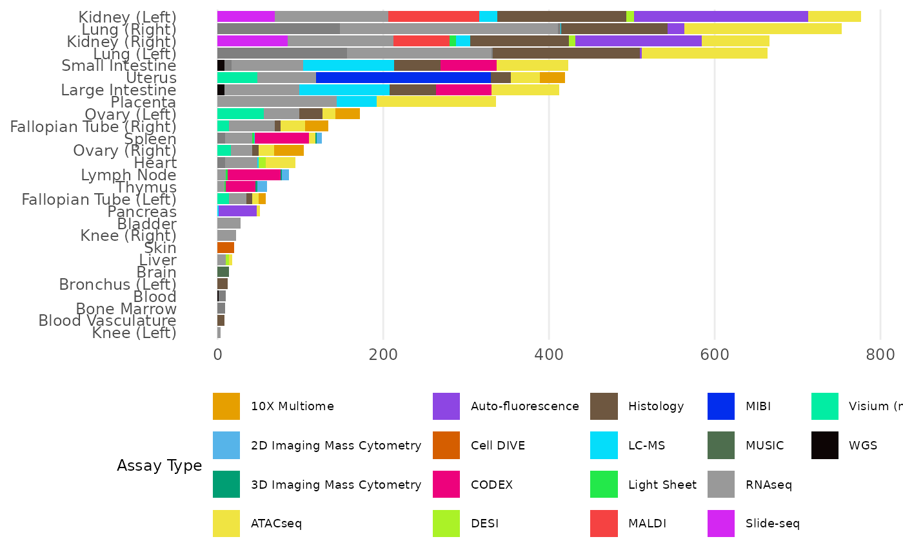

Explore Human BioMolecular Atlas Program Data Portal
Christine Hou
Department of Biostatistics, Johns Hopkins Universitychris2018hou@gmail.com Source:
vignettes/hubmapr_vignettes.Rmd
hubmapr_vignettes.RmdOverview
‘HuBMAP’ data portal (https://portal.hubmapconsortium.org/) provides an open,
global bio-molecular atlas of the human body at the cellular level.
HuBMAPR package provides an alternative interface to
explore the data via R.
Installation
HuBMAPR is a R package. Install development version from
GitHub:
remotes::install("christinehou11/HuBMAPR")Basic User Guide
Load Necessary Packages
Install additional required packages before running package codes.
pkgs <- c("dplyr", "tidyr")
required_pkgs <- pkgs[!pkgs %in% rownames(installed.packages())]
BiocManager::install(required_pkgs)Load additional packages. dplyr package is widely used
in this vignettes to conduct data wrangling and specific information
extraction.
Data Discovery
HuBMAP data portal page displays five categories of
entity data, which are Dataset, Sample, Donor, Publication, and
Collection, chronologically (last modified date time). Using
corresponding functions to explore entity data.
datasets_df <- datasets()
#> Pruning cache
datasets_df
#> # A tibble: 3,301 × 14
#> uuid hubmap_id dataset_type dataset_type_additio…¹ organ analyte_class
#> <chr> <chr> <chr> <chr> <chr> <chr>
#> 1 319579dab9… HBM965.G… RNAseq sciRNAseq Heart RNA
#> 2 756a0eed95… HBM388.Z… RNAseq sciRNAseq Heart RNA
#> 3 7e4c58d746… HBM952.D… ATACseq sciATACseq Heart DNA
#> 4 e75d8b31cf… HBM667.Z… RNAseq sciRNAseq Heart RNA
#> 5 42b73e4e34… HBM972.V… RNAseq sciRNAseq Heart RNA
#> 6 b2db3414ce… HBM366.L… ATACseq sciATACseq Heart DNA
#> 7 48da185436… HBM583.S… ATACseq sciATACseq Sple… DNA
#> 8 fe43e21822… HBM389.N… ATACseq sciATACseq Smal… DNA
#> 9 02dcd83480… HBM429.Q… ATACseq sciATACseq Smal… DNA
#> 10 8ea82dc9f2… HBM445.L… ATACseq sciATACseq Panc… DNA
#> # ℹ 3,291 more rows
#> # ℹ abbreviated name: ¹dataset_type_additional_information
#> # ℹ 8 more variables: sample_category <chr>, status <chr>,
#> # dataset_processing_category <chr>, pipeline <chr>, registered_by <chr>,
#> # donor_hubmap_id <chr>, group_name <chr>, last_modified_timestamp <chr>
The default tibble produced by corresponding entity function only
reflects selected information. To see the names of selected information,
use following commands for each entity category. Specify as
parameter to display information in the format of
"character" or "tibble".
# as = "tibble" (default)
datasets_col_tbl <- datasets_default_columns(as = "tibble")
datasets_col_tbl
#> # A tibble: 14 × 1
#> columns
#> <chr>
#> 1 uuid
#> 2 hubmap_id
#> 3 group_name
#> 4 dataset_type_additional_information
#> 5 dataset_type
#> 6 organ
#> 7 analyte_class
#> 8 dataset_processing_category
#> 9 sample_category
#> 10 registered_by
#> 11 status
#> 12 pipeline
#> 13 last_modified_timestamp
#> 14 donor_hubmap_id
# as = "character"
datasets_col_char <- datasets_default_columns(as = "character")
datasets_col_char
#> [1] "uuid" "hubmap_id"
#> [3] "group_name" "dataset_type_additional_information"
#> [5] "dataset_type" "organ"
#> [7] "analyte_class" "dataset_processing_category"
#> [9] "sample_category" "registered_by"
#> [11] "status" "pipeline"
#> [13] "last_modified_timestamp" "donor_hubmap_id"samples_default_columns(),
donors_default_columns(),
collections_default_columns(), and
publications_default_columns() work same as above.
A brief overview of selected information for five entity categories is:
tbl <- bind_cols(
dataset = datasets_default_columns(as = "character"),
sample = c(samples_default_columns(as = "character"), rep(NA, 7)),
donor = c(donors_default_columns(as = "character"), rep(NA, 6)),
collection = c(collections_default_columns(as = "character"),
rep(NA, 10)),
publication = c(publications_default_columns(as = "character"),
rep(NA, 7))
)
tbl
#> # A tibble: 14 × 5
#> dataset sample donor collection publication
#> <chr> <chr> <chr> <chr> <chr>
#> 1 uuid uuid hubm… uuid uuid
#> 2 hubmap_id hubmap_id uuid hubmap_id hubmap_id
#> 3 group_name group_name grou… title title
#> 4 dataset_type_additional_information sample_cate… Sex last_modi… publicatio…
#> 5 dataset_type organ Age NA last_modif…
#> 6 organ last_modifi… Body… NA publicatio…
#> 7 analyte_class donor_hubma… Race NA publicatio…
#> 8 dataset_processing_category NA last… NA NA
#> 9 sample_category NA NA NA NA
#> 10 registered_by NA NA NA NA
#> 11 status NA NA NA NA
#> 12 pipeline NA NA NA NA
#> 13 last_modified_timestamp NA NA NA NA
#> 14 donor_hubmap_id NA NA NA NAUse organ() to read through the available organs
included in HuBMAP. It can be helpful to filter retrieved
data based on organ information.
organs <- organ()
organs
#> # A tibble: 43 × 2
#> abbreviation name
#> <chr> <chr>
#> 1 BD Blood
#> 2 BL Bladder
#> 3 BM Bone Marrow
#> 4 BR Brain
#> 5 BV Blood Vasculature
#> 6 HT Heart
#> 7 LA Larynx
#> 8 LB Bronchus (Left)
#> 9 LE Eye (Left)
#> 10 LF Fallopian Tube (Left)
#> # ℹ 33 more rowsData wrangling and filter are welcome to retrieve data based on interested information.
# Example from datasets()
datasets_df |>
filter(organ == 'Small Intestine') |>
count()
#> # A tibble: 1 × 1
#> n
#> <int>
#> 1 424Any dataset, sample, donor, collection, and publication has special HuBMAP ID and UUID, and UUID is the main ID to be used in most of functions for specific detail retrievals.
The column of donor_hubmap_id is included in the
retrieved tibbles from samples() and
datasets(), which can help to join the tibble.
donors_df <- donors()
donor_sub <- donors_df |>
filter(Sex == "Female",
Age <= 76 & Age >= 55,
Race == "White",
`Body Mass Index` <= 25,
last_modified_timestamp >= "2020-01-08" &
last_modified_timestamp <= "2020-06-30") |>
head(1)
# Datasets
donor_sub_dataset <- donor_sub |>
left_join(datasets_df |>
select(-c(group_name, last_modified_timestamp)) |>
rename("dataset_uuid" = "uuid",
"dataset_hubmap_id" = "hubmap_id"),
by = c("hubmap_id" = "donor_hubmap_id"))
donor_sub_dataset
#> # A tibble: 76 × 19
#> uuid hubmap_id group_name Sex Age `Body Mass Index` Race
#> <chr> <chr> <chr> <chr> <dbl> <dbl> <chr>
#> 1 f8d963cab6bd10e2a4b… HBM289.B… Universit… Fema… 57 19.6 White
#> 2 f8d963cab6bd10e2a4b… HBM289.B… Universit… Fema… 57 19.6 White
#> 3 f8d963cab6bd10e2a4b… HBM289.B… Universit… Fema… 57 19.6 White
#> 4 f8d963cab6bd10e2a4b… HBM289.B… Universit… Fema… 57 19.6 White
#> 5 f8d963cab6bd10e2a4b… HBM289.B… Universit… Fema… 57 19.6 White
#> 6 f8d963cab6bd10e2a4b… HBM289.B… Universit… Fema… 57 19.6 White
#> 7 f8d963cab6bd10e2a4b… HBM289.B… Universit… Fema… 57 19.6 White
#> 8 f8d963cab6bd10e2a4b… HBM289.B… Universit… Fema… 57 19.6 White
#> 9 f8d963cab6bd10e2a4b… HBM289.B… Universit… Fema… 57 19.6 White
#> 10 f8d963cab6bd10e2a4b… HBM289.B… Universit… Fema… 57 19.6 White
#> # ℹ 66 more rows
#> # ℹ 12 more variables: last_modified_timestamp <chr>, dataset_uuid <chr>,
#> # dataset_hubmap_id <chr>, dataset_type <chr>,
#> # dataset_type_additional_information <chr>, organ <chr>,
#> # analyte_class <chr>, sample_category <chr>, status <chr>,
#> # dataset_processing_category <chr>, pipeline <chr>, registered_by <chr>
# Samples
samples_df <- samples()
donor_sub_sample <- donor_sub |>
left_join(samples_df |>
select(-c(group_name, last_modified_timestamp)) |>
rename("sample_uuid" = "uuid",
"sample_hubmap_id" = "hubmap_id"),
by = c("hubmap_id" = "donor_hubmap_id"))
donor_sub_sample
#> # A tibble: 9 × 12
#> uuid hubmap_id group_name Sex Age `Body Mass Index` Race
#> <chr> <chr> <chr> <chr> <dbl> <dbl> <chr>
#> 1 f8d963cab6bd10e2a4b8… HBM289.B… Universit… Fema… 57 19.6 White
#> 2 f8d963cab6bd10e2a4b8… HBM289.B… Universit… Fema… 57 19.6 White
#> 3 f8d963cab6bd10e2a4b8… HBM289.B… Universit… Fema… 57 19.6 White
#> 4 f8d963cab6bd10e2a4b8… HBM289.B… Universit… Fema… 57 19.6 White
#> 5 f8d963cab6bd10e2a4b8… HBM289.B… Universit… Fema… 57 19.6 White
#> 6 f8d963cab6bd10e2a4b8… HBM289.B… Universit… Fema… 57 19.6 White
#> 7 f8d963cab6bd10e2a4b8… HBM289.B… Universit… Fema… 57 19.6 White
#> 8 f8d963cab6bd10e2a4b8… HBM289.B… Universit… Fema… 57 19.6 White
#> 9 f8d963cab6bd10e2a4b8… HBM289.B… Universit… Fema… 57 19.6 White
#> # ℹ 5 more variables: last_modified_timestamp <chr>, sample_uuid <chr>,
#> # sample_hubmap_id <chr>, sample_category <chr>, organ <chr>You can use *_detail(uuid) to retrieve all available
information for any entry of any entity category given
UUID. Use select() and
unnest_*() functions to expand list-columns. It will be
convenient to view tables with multiple columns but one row using
glimpse().
dataset_uuid <- datasets_df |>
filter(dataset_type == "Auto-fluorescence",
organ == "Kidney (Right)") |>
head(1) |>
pull(uuid)
# Full Information
dataset_detail(dataset_uuid) |> glimpse()
#> Rows: 1
#> Columns: 37
#> $ ancestor_ids <list> <"b64883fc7c11d070b5e5222c656eaae7",…
#> $ ancestors <list> [["Jamie Allen", "jamie.l.allen@vand…
#> $ contacts <list> [["Biomolecular Multimodal Imaging C…
#> $ contains_human_genetic_sequences <lgl> FALSE
#> $ contributors <list> [["Biomolecular Multimodal Imaging Ce…
#> $ created_by_user_displayname <chr> "HuBMAP Process"
#> $ created_by_user_email <chr> "hubmap@hubmapconsortium.org"
#> $ created_timestamp <dbl> 1.711126e+12
#> $ creation_action <chr> "Create Dataset Activity"
#> $ data_access_level <chr> "public"
#> $ dataset_type <chr> "Auto-fluorescence"
#> $ descendant_ids <list> "5cb9ec3acfe11753b9a2899fe87ee0e4"
#> $ descendants <list> [[FALSE, "HuBMAP Process", "hubmap@h…
#> $ description <chr> "Autofluorescence Microscopy collecte…
#> $ display_subtype <chr> "Auto-fluorescence"
#> $ doi_url <chr> "https://doi.org/10.35079/HBM793.WWZC…
#> $ donor <list> ["Jamie Allen", "jamie.l.allen@vander…
#> $ entity_type <chr> "Dataset"
#> $ files <list> []
#> $ group_name <chr> "Vanderbilt TMC"
#> $ group_uuid <chr> "73bb26e4-ed43-11e8-8f19-0a7c1eab007a"
#> $ hubmap_id <chr> "HBM793.WWZC.833"
#> $ immediate_ancestor_ids <list> "b64883fc7c11d070b5e5222c656eaae7"
#> $ immediate_ancestors <list> [["Jamie Allen", "jamie.l.allen@vande…
#> $ immediate_descendant_ids <list> "5cb9ec3acfe11753b9a2899fe87ee0e4"
#> $ immediate_descendants <list> [[FALSE, "HuBMAP Process", "hubmap@hu…
#> $ index_version <chr> "3.4.8"
#> $ last_modified_timestamp <dbl> 1.71691e+12
#> $ metadata <list> [[["a9099c6", "https://github.com/hub…
#> $ origin_samples <list> [["Jamie Allen", "jamie.l.allen@vand…
#> $ provider_info <chr> "VAN0042-RK-3 block AF : ./VAN0042-R…
#> $ published_timestamp <dbl> 1.715267e+12
#> $ registered_doi <chr> "10.35079/HBM793.WWZC.833"
#> $ source_samples <list> [["Jamie Allen", "jamie.l.allen@vande…
#> $ status <chr> "Published"
#> $ title <chr> "Auto-fluorescence data from the kidn…
#> $ uuid <chr> "2e7123dcf2e9092a42ac42e44c2d686b"
# Specific Information
dataset_detail(uuid = dataset_uuid) |>
select(contributors) |>
unnest_longer(contributors) |>
unnest_wider(everything())
#> # A tibble: 16 × 11
#> affiliation display_name email first_name is_contact is_operator
#> <chr> <chr> <chr> <chr> <chr> <chr>
#> 1 Biomolecular Multimodal… Jamie L. Al… jami… Jamie No Yes
#> 2 Delft Center for System… Lukasz Migas l.g.… Lukasz No Yes
#> 3 Biomolecular Multimodal… Nathan Heat… nath… Nathan No Yes
#> 4 Biomolecular Multimodal… Jeffrey M. … jeff… Jeffrey Yes No
#> 5 Delft Center for System… Leonor Tide… l.e.… Leonoor No Yes
#> 6 Delft Center for System… Raf Van de … Raf.… Raf No No
#> 7 Biomolecular Multimodal… Melissa A. … meli… Melissa No Yes
#> 8 Biomolecular Multimodal… Madeline E.… made… Madeline No Yes
#> 9 Biomolecular Multimodal… Ellie L. Pi… elli… Ellie No Yes
#> 10 Delft Center for System… Felipe Moser f.a.… Felipe No Yes
#> 11 Division of Nephrology … Mark deCaes… mark… Mark No Yes
#> 12 Division of Nephrology … Agnes B. Fo… agne… Agnes No Yes
#> 13 Division of Nephrology … Haichun Yang haic… Haichun No Yes
#> 14 Biomolecular Multimodal… Tina Tsui tina… Tina No Yes
#> 15 Biomolecular Multimodal… Katerina V.… kate… Katerina No Yes
#> 16 Biomolecular Multimodal… Allison B. … alli… Allison No Yes
#> # ℹ 5 more variables: is_principal_investigator <chr>, last_name <chr>,
#> # metadata_schema_id <chr>, middle_name_or_initial <chr>, orcid <chr>sample_detail(), donor_detail(),
collection_detail(), and publication_detail()
work same as above.
Metadata
To retrieve the metadata for Dataset,
Sample, and Donor metadata, use
dataset_metadata(), sample_metadata(), and
donor_metadata().
dataset_metadata("993bb1d6fa02e2755fd69613bb9d6e08")
#> # A tibble: 20 × 2
#> Key Value
#> <chr> <chr>
#> 1 acquisition_instrument_model "Axio Scan.Z1"
#> 2 acquisition_instrument_vendor "Zeiss Microscopy"
#> 3 analyte_class "endogenous fluorophores"
#> 4 antibodies_path "extras/antibodies.tsv"
#> 5 contributors_path "extras/contributors.tsv"
#> 6 data_path "."
#> 7 dataset_type "Auto-fluorescence"
#> 8 is_image_preprocessing_required "no"
#> 9 is_targeted "No"
#> 10 lab_id "VAN0042-RK-3-17-AF"
#> 11 metadata_schema_id "c9c6a02b-010e-4217-96dc-f7ef71dd14c4"
#> 12 parent_sample_id "HBM836.RXKQ.893"
#> 13 preparation_protocol_doi "https://dx.doi.org/10.17504/protocols.io.7e…
#> 14 source_storage_duration_unit "hour"
#> 15 source_storage_duration_value "2"
#> 16 tile_configuration "Not applicable"
#> 17 donor.Age "57 years"
#> 18 donor.Body Mass Index "25.3 kg/m2"
#> 19 donor.Race "White "
#> 20 donor.Sex "Male "
sample_metadata("8ecdbdc3e2d04898e2563d666658b6a9")
#> # A tibble: 5 × 2
#> Key Value
#> <chr> <chr>
#> 1 donor.Age "71 years"
#> 2 donor.Apolipoprotein E phenotype "Apolipoprotein E phenotype "
#> 3 donor.Pathology note "Pathology note "
#> 4 donor.Race "White "
#> 5 donor.Sex "Male "
donor_metadata("b2c75c96558c18c9e13ba31629f541b6")
#> # A tibble: 8 × 2
#> Key Value
#> <chr> <chr>
#> 1 Age "41 years"
#> 2 Body mass index "37.1 kg/m^2"
#> 3 Cause of death "Cerebrovascular accident "
#> 4 Death event "Natural causes "
#> 5 Mechanism of injury "Intracranial hemorrhage "
#> 6 Race "White "
#> 7 Sex "Female "
#> 8 Social history "Smoker "Derived Data
Some datasets from Dataset entity has derived
(support) dataset(s). Use dataset_derived() to retrieve. A
tibble with selected details will be retrieved as if the given dataset
has support dataset; otherwise, nothing returns.
# no derived/support dataset
dataset_uuid_1 <- "3acdb3ed962b2087fbe325514b098101"
dataset_derived(uuid = dataset_uuid_1)
#> NULL
# has derived/support dataset
dataset_uuid_2 <- "baf976734dd652208d13134bc5c4594b"
dataset_derived(uuid = dataset_uuid_2) |> glimpse()
#> Rows: 1
#> Columns: 6
#> $ uuid <chr> "bbbf5a5b29986dd57910daab00193f35"
#> $ hubmap_id <chr> "HBM664.NZBB.674"
#> $ data_types <chr> ""
#> $ dataset_type <chr> "Histology [Image Pyramid]"
#> $ status <chr> "Published"
#> $ last_modified_timestamp <chr> "2024-08-08"Sample and Donor have derived
samples and datasets. In HuBAMPR package,
sample_derived() and donor_derived() functions
are available to use to see the derived datasets and samples from one
sample given sample UUID or one donor given donor UUID. Specify
entity_type parameter to retrieve derived
Dataset or Sample.
sample_uuid <- samples_df |>
filter(last_modified_timestamp >= "2023-01-01" &
last_modified_timestamp <= "2023-10-01",
organ == "Kidney (Left)") |>
head(1) |>
pull(uuid)
sample_uuid
#> [1] "c40774aa2f52a2811db15c5ca1949314"
# Derived Datasets
sample_derived(uuid = sample_uuid, entity_type = "Dataset")
#> # A tibble: 12 × 6
#> uuid hubmap_id dataset_type status last_modified_timest…¹
#> <chr> <chr> <chr> <chr> <chr>
#> 1 4fddf6de0f42a7e2648b547… HBM782.S… MALDI Publi… 2023-08-21
#> 2 b6fd505b8e8e1829a278357… HBM775.Q… MALDI [Imag… Publi… 2023-08-21
#> 3 c3db2027e148e92fecb85e7… HBM438.V… Auto-fluore… Publi… 2023-12-18
#> 4 3a10030d3323e5353cfdc3a… HBM733.G… Auto-fluore… Publi… 2023-12-18
#> 5 71642e4c4a9cc12f59f3317… HBM846.F… Histology Publi… 2024-03-01
#> 6 bd42ab2f422e45ce6b0f3f5… HBM665.R… Histology [… Publi… 2024-03-01
#> 7 c8ad223f01b45b25e0dcb07… HBM472.N… MALDI Publi… 2023-08-21
#> 8 f7b49444b974c98c6300e0b… HBM629.S… MALDI [Imag… Publi… 2023-08-21
#> 9 beb1b65624fe85b527ee2ce… HBM873.P… Auto-fluore… Publi… 2023-12-18
#> 10 c25d6febe5b007ad32bc592… HBM672.N… Auto-fluore… Publi… 2023-12-18
#> 11 744647801573d1d5700ee75… HBM222.J… Auto-fluore… Publi… 2024-05-08
#> 12 4a98c43ab3b20b06c11dfbe… HBM973.L… Auto-fluore… Publi… 2024-05-08
#> # ℹ abbreviated name: ¹last_modified_timestamp
#> # ℹ 1 more variable: derived_dataset_count <int>
# Derived Samples
sample_derived(uuid = sample_uuid, entity_type = "Sample")
#> # A tibble: 3 × 5
#> uuid hubmap_id sample_category last_modified_timest…¹ organ
#> <chr> <chr> <chr> <chr> <chr>
#> 1 ec54b7d4ab4545166a0d12… HBM299.P… section 2021-08-18 Kidn…
#> 2 ae98f6ca4f1f9950f7e7e1… HBM636.L… section 2021-08-18 Kidn…
#> 3 b099a37195f532e4b38402… HBM937.H… section 2021-08-18 Kidn…
#> # ℹ abbreviated name: ¹last_modified_timestampdonor_derived() works same as above.
Provenance Data
For individual entries from Dataset and
Sample entities, uuid_provenance() helps
to retrieve the provenance of the entry as a list of characters (UUID,
HuBMAP ID, and entity type) from the most recent ancestor to the
furthest ancestor. There is no ancestor for Donor UUID, and an empty
list will be returned.
# dataset provenance
dataset_uuid <- "3e4c568d9ce8df9d73b8cddcf8d0fec3"
uuid_provenance(dataset_uuid)
#> [[1]]
#> [1] "eba120ab7bbd864a6f6f3ad41e598d25, HBM962.BLVL.393, Sample"
#>
#> [[2]]
#> [1] "468d73d28b9e8c43ffa5fbd56d8e46e3, HBM346.VCLT.434, Sample"
#>
#> [[3]]
#> [1] "1c749716d32310351cb9557c7e2937a0, HBM464.VFPP.474, Sample"
#>
#> [[4]]
#> [1] "c09f875545a64694d70a28091ffbcf8b, HBM534.PKFT.943, Donor"
# sample provenance
sample_uuid <- "35e16f13caab262f446836f63cf4ad42"
uuid_provenance(sample_uuid)
#> [[1]]
#> [1] "0b43d8d0dbbc5e3923a8b963650ab8e3, HBM945.PZHJ.983, Sample"
#>
#> [[2]]
#> [1] "eed96170f42554db84d97d1652bb23ef, HBM465.ZCWN.623, Sample"
#>
#> [[3]]
#> [1] "1628b6f7eb615862322d6274a6bc9fa0, HBM279.WPZP.978, Donor"
# donor provenance
donor_uuid <- "0abacde2443881351ff6e9930a706c83"
uuid_provenance(donor_uuid)
#> list()Related Data
Each Collection has related datasets, and use
collection_data() to retrieve.
collections_df <- collections()
collection_uuid <- collections_df |>
filter(last_modified_timestamp >= "2023-01-01") |>
head(1) |>
pull(uuid)
collection_data(collection_uuid)
#> # A tibble: 211 × 7
#> uuid hubmap_id dataset_type_additio…¹ dataset_type last_modified_timest…²
#> <chr> <chr> <chr> <chr> <chr>
#> 1 59c8093… HBM296.N… MIBI MIBI 2023-03-09
#> 2 09dcc99… HBM374.N… MIBI MIBI 2023-03-09
#> 3 c0ede74… HBM255.F… MIBI MIBI 2023-03-09
#> 4 18a68d8… HBM297.D… MIBI MIBI 2023-03-09
#> 5 4e6a2c1… HBM495.D… MIBI MIBI 2023-03-09
#> 6 f5619b5… HBM452.K… MIBI MIBI 2023-03-09
#> 7 2b56f0f… HBM887.D… MIBI MIBI 2023-03-09
#> 8 54eec38… HBM439.H… MIBI MIBI 2023-03-09
#> 9 b77be62… HBM225.P… MIBI MIBI 2023-03-09
#> 10 36a80d4… HBM367.Q… MIBI MIBI 2023-03-09
#> # ℹ 201 more rows
#> # ℹ abbreviated names: ¹dataset_type_additional_information,
#> # ²last_modified_timestamp
#> # ℹ 2 more variables: status <chr>, organ <chr>Each publication has related datasets, samples, and donors, and use
publication_data() to see, while specifying
entity_type parameter to retrieve derived
Dataset or Sample.
publications_df <- publications()
publication_uuid <- publications_df |>
filter(publication_venue == "Nature") |>
head(1) |>
pull(uuid)
publication_data(publication_uuid, entity_type = "Dataset")
#> # A tibble: 1 × 7
#> uuid hubmap_id dataset_type_additio…¹ dataset_type status
#> <chr> <chr> <chr> <chr> <chr>
#> 1 3a4fb23a49fba2647dba2b8f… HBM666.R… CODEX CODEX Publi…
#> # ℹ abbreviated name: ¹dataset_type_additional_information
#> # ℹ 2 more variables: last_modified_timestamp <chr>, organ <chr>
publication_data(publication_uuid, entity_type = "Sample")
#> # A tibble: 3 × 4
#> uuid hubmap_id sample_category last_modified_timest…¹
#> <chr> <chr> <chr> <chr>
#> 1 5ded68dde822d1c03ee04fe58b97… HBM853.Q… block 2022-02-16
#> 2 ecca7757c924f2380669a15555d3… HBM555.R… block 2022-02-16
#> 3 5d079766bf17544745c38d88d692… HBM628.H… organ 2021-01-27
#> # ℹ abbreviated name: ¹last_modified_timestampAdditional Information
To read the textual description of one Collection or
Publication, use collection_information()
or publication_information() respectively.
collection_information(uuid = collection_uuid)
#> Title
#> Spatiotemporal coordination at the maternal-fetal interface promotes trophoblast invasion and vascular remodeling in the first half of human pregnancy
#> Description
#> Beginning in the first trimester, fetally derived extravillous trophoblasts (EVTs) invade the uterus and remodel its spiral arteries, transforming them into large, dilated blood vessels left with a thin, discontinuous smooth muscle layer and partially lined with EVTs. Several mechanisms have been proposed to explain how EVTs coordinate with the maternal decidua to promote a tissue microenvironment conducive to spiral artery remodeling (SAR). However, it remains a matter of debate which immune and stromal cell types participate in these interactions and how this process evolves with respect to gestational age. Here, we used a multiomic approach that combined the strengths of spatial proteomics and transcriptomics to construct the first spatiotemporal atlas of the human maternal-fetal interface in the first half of pregnancy. We used multiplexed ion beam imaging by time of flight (MIBI-TOF) and a 37-plex antibody panel to analyze ∼500,000 cells and 588 spiral arteries within intact decidua from 66 patients between 6-20 weeks of gestation, integrating this with coregistered transcriptomic profiles. Gestational age substantially influenced the frequency of many maternal immune and stromal cells, with tolerogenic subsets expressing CD206, CD163, TIM-3, Galectin-9, and IDO-1 increasingly enriched and colocalized at later time points. In contrast, SAR progression preferentially correlated with EVT invasion and was transcriptionally defined by 78 gene ontology pathways exhibiting unique monotonic and biphasic trends. Lastly, we developed an integrated model of SAR supporting an intravasation mechanism where invasion is accompanied by upregulation of pro-angiogenic, immunoregulatory EVT programs that promote interactions with vascular endothelium while avoiding activation of immune cells in circulating maternal blood. Taken together, these results support a coordinated model of decidualization in which increasing gestational age drives a transition in maternal decidua towards a tolerogenic niche conducive to locally regulated, EVT-dependent SAR.
#> DOI
#> - https://doi.org/10.35079/hbm585.qpdv.454
#> URL
#> - 10.35079/hbm585.qpdv.454
publication_information(uuid = publication_uuid)
#> Title
#> Organization of the human intestine at single-cell resolution
#> Abstract
#> We investigated the spatial arrangement of individual cells using multiplexed imaging, as well as single-nucleus RNA and open chromatin assays, across eight different regions of the intestine from nine donors. Through comprehensive analyses, we observed significant variations in cell compositions among the intestinal regions and the intricate nature of epithelial subtypes. Furthermore, we discovered that similar cell types form distinct neighborhoods and communities, highlighting the presence of unique immunological niches within the intestine. Additionally, we identified gene regulatory differences within these cells, suggesting the existence of a regulatory differentiation cascade, and established associations between specific cell types and the heritability of intestinal diseases. These findings elucidate the intricate cell composition, regulation, and spatial organization within this organ, providing a valuable reference map for advancing our understanding of human biology and disease.
#> Manuscript
#> - Nature: https://doi.org/10.1038/s41586-023-05915-x
#> Corresponding Authors
#> - John Hickey 0000-0001-9961-7673
#> Data Types
#> - CODEX
#> Organs
#> - Small IntestineSome additional contact/author/contributor information can be
retrieved using dataset_contributor() for
Dataset entity, collection_contact() and
collection_contributors() for Collection
entity, or publication_authors() for
Publication entity.
# Dataset
dataset_contributors(uuid = dataset_uuid)
#> # A tibble: 2 × 5
#> display_name affiliation email orcid is_principal_investi…¹
#> <chr> <chr> <chr> <chr> <chr>
#> 1 Xingzhao Wen "University of California, Sa… xzwe… 0000… No
#> 2 Sheng Zhong "University of California, Sa… szho… 0000… Yes
#> # ℹ abbreviated name: ¹is_principal_investigator
# Collection
collection_contacts(uuid = collection_uuid)
#> # A tibble: 2 × 3
#> name affiliation orcid_id
#> <chr> <chr> <chr>
#> 1 Shirley Greenbaum Department of Pathology, Stanford University 0000-0002-0680…
#> 2 Michael Angelo Department of Pathology, Stanford University 0000-0003-1531…
collection_contributors(uuid = collection_uuid)
#> # A tibble: 13 × 3
#> name affiliation orcid_id
#> <chr> <chr> <chr>
#> 1 Shirley Greenbaum Department of Pathology, Stanford University 0000-00…
#> 2 Inna Averbukh Department of Pathology, Stanford University 0000-00…
#> 3 Erin Soon Department of Pathology, Stanford University 0000-00…
#> 4 Gabrielle Rizzuto Department of Pathology, UCSF 0000-00…
#> 5 Noah Greenwald Department of Pathology, Stanford University 0000-00…
#> 6 Marc Bosse Department of Pathology, Stanford University 0000-00…
#> 7 Eleni G. Jaswa Department of Obstetrics, Gynecology & Reproducti… 0000-00…
#> 8 Zumana Khair Department of Pathology, Stanford University 0000-00…
#> 9 David Van Valen Division of Biology and Bioengineering, Californi… 0000-00…
#> 10 Leeat Keren Department of Molecular Cell Biology, Weizmann In… 0000-00…
#> 11 Travis Hollmann Department of Pathology, Memorial Sloan Kettering… 0000-00…
#> 12 Matt van de Rjin Department of Pathology, Stanford University 0000-00…
#> 13 Michael Angelo Department of Pathology, Stanford University 0000-00…
# Publication
publication_authors(uuid = publication_uuid)
#> # A tibble: 3 × 3
#> name affiliation orcid_id
#> <chr> <chr> <chr>
#> 1 John Hickey Stanford University 0000-0001-9961-7673
#> 2 Chiara Caraccio Stanford University 0000-0002-3580-1348
#> 3 Garry Nolan Stanford University 0000-0002-8862-9043File Download
For each dataset, there are corresponding data files. Most of the datasets’ files are available on HuBMAP Globus with corresponding URL. Some of the datasets’ files are not available via Globus, but can be accessed via dbGAP (database of Genotypes and Phenotypes) and/or SRA (Sequence Read Archive). But some of the datasets’ files are not available in any authorized platform.
Use bulk_data_transfer() to know whether data files are
open-accessed or restricted. The function will direct you to chrome if
the files are accessible; otherwise, the error messages will be printed
out with addition instructions, either providing dbGAP/SRA URLs or
pointing out the unavailability.
uuid_globus <- "d1dcab2df80590d8cd8770948abaf976"
bulk_data_transfer(uuid_globus)
uuid_dbGAP_SRA <- "d926c41ac08f3c2ba5e61eec83e90b0c"
bulk_data_transfer(uuid_dbGAP_SRA)
uuid_not_avail <- "0eb5e457b4855ce28531bc97147196b6"
bulk_data_transfer(uuid_not_avail)You can choose to download data files on Globus webpage by clicking download button after choosing the desired document. You can also preview and download data files using rglobus package. Follow the instructions here.
R session information
#> R version 4.4.1 (2024-06-14)
#> Platform: x86_64-pc-linux-gnu
#> Running under: Ubuntu 22.04.4 LTS
#>
#> Matrix products: default
#> BLAS: /usr/lib/x86_64-linux-gnu/openblas-pthread/libblas.so.3
#> LAPACK: /usr/lib/x86_64-linux-gnu/openblas-pthread/libopenblasp-r0.3.20.so; LAPACK version 3.10.0
#>
#> locale:
#> [1] LC_CTYPE=C.UTF-8 LC_NUMERIC=C LC_TIME=C.UTF-8 LC_COLLATE=C.UTF-8 LC_MONETARY=C.UTF-8
#> [6] LC_MESSAGES=C.UTF-8 LC_PAPER=C.UTF-8 LC_NAME=C LC_ADDRESS=C LC_TELEPHONE=C
#> [11] LC_MEASUREMENT=C.UTF-8 LC_IDENTIFICATION=C
#>
#> time zone: UTC
#> tzcode source: system (glibc)
#>
#> attached base packages:
#> [1] stats graphics grDevices utils datasets methods base
#>
#> other attached packages:
#> [1] HuBMAPR_0.99.0 ggplot2_3.5.1 tidyr_1.3.1 dplyr_1.1.4 BiocStyle_2.32.1
#>
#> loaded via a namespace (and not attached):
#> [1] rappdirs_0.3.3 sass_0.4.9 utf8_1.2.4 generics_0.1.3 stringi_1.8.4
#> [6] digest_0.6.37 magrittr_2.0.3 evaluate_0.24.0 grid_4.4.1 bookdown_0.40
#> [11] fastmap_1.2.0 jsonlite_1.8.8 whisker_0.4.1 BiocManager_1.30.25 purrr_1.0.2
#> [16] fansi_1.0.6 scales_1.3.0 httr2_1.0.3 textshaping_0.4.0 jquerylib_0.1.4
#> [21] cli_3.6.3 rlang_1.1.4 munsell_0.5.1 withr_3.0.1 cachem_1.1.0
#> [26] yaml_2.3.10 tools_4.4.1 colorspace_2.1-1 curl_5.2.2 vctrs_0.6.5
#> [31] rjsoncons_1.3.1 R6_2.5.1 lifecycle_1.0.4 stringr_1.5.1 fs_1.6.4
#> [36] ragg_1.3.2 pkgconfig_2.0.3 desc_1.4.3 pkgdown_2.1.0 pillar_1.9.0
#> [41] bslib_0.8.0 gtable_0.3.5 glue_1.7.0 systemfonts_1.1.0 highr_0.11
#> [46] xfun_0.47 tibble_3.2.1 tidyselect_1.2.1 knitr_1.48 farver_2.1.2
#> [51] htmltools_0.5.8.1 rmarkdown_2.28 labeling_0.4.3 compiler_4.4.1